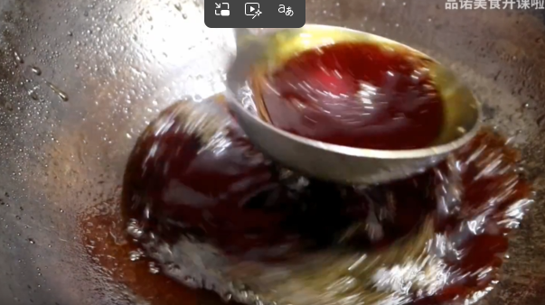
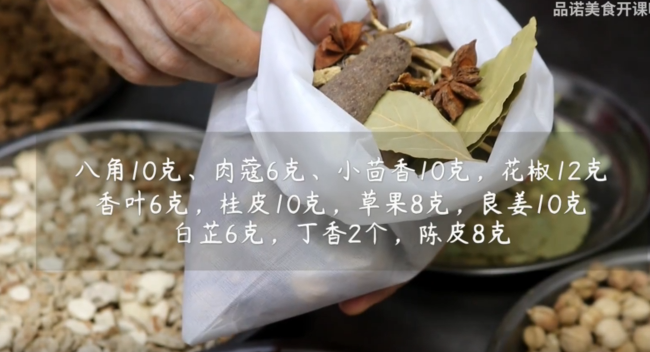
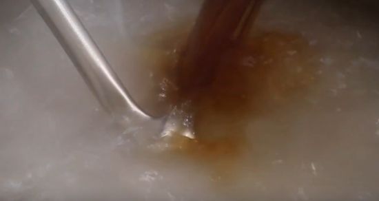
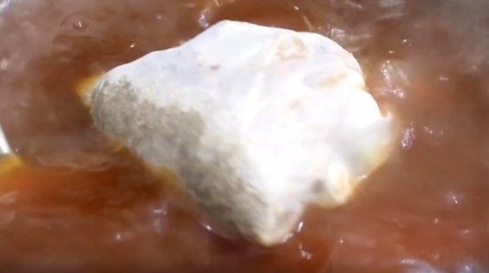
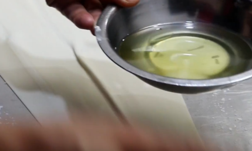
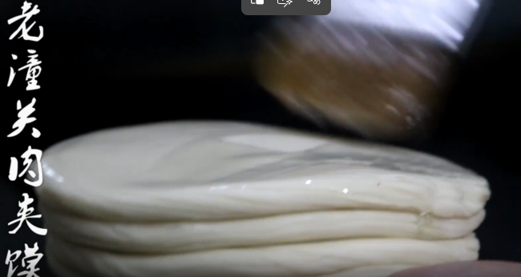
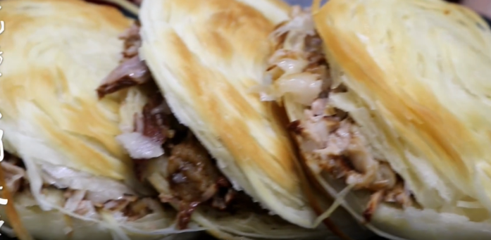

视频教程
肉夹馍制作过程
一、炒糖色

- 用料：白砂糖(也可以用冰糖)、豆油、水
- 热锅加少许豆油，放入白糖，小火炒至融化。不停搅动，等液体表面全部起沫后，加入开水，关火。

二、香料包
- 八角 10克、肉蔻 6克、小茴香 10克、花椒 12克、香叶 6克、桂皮 10克、草果 8克、良姜 10克、白芷 6克、丁香 2个、陈皮 8克
- 将所有香料放入纱布袋中，扎紧口备用。

三、煮肉
- 用料：猪肉（五花肉或前夹肉）500克、姜片 10克、葱段 10克、香料包 1个、炒好的糖色 适量、盐 适量
- 选用前腿肉，用清水浸泡去除血水
- 高汤20斤，加入篦子（防止肉粘锅底）
- 调料：盐280克、冰糖10颗、白酒30克、炒好的糖色
- 加入处理好的肉和香料包，用篦子或碗压实，防止飘起
- 中火煮至筷子能轻轻插透肉时关火
- 浸泡1-2小时，让肉更入味
- 锅中加入炒好的糖色，放入姜片、葱段和香料包，倒入适量的水烧开。加入焯水后的肉块，转小火炖煮约1.5小时，直到肉质酥烂。最后根据口味加入适量的盐调味。

四、制作饼子（老潼关饼）
- 材料：面粉2斤、泡打粉6克、盐1克、水460克

制作步骤
- 面粉加入泡打粉、碱搅拌均匀
- 分次加水，边加边搅拌成絮状
- 揉成光滑面团，醒发30分钟
- 取醒好的面压开，用擀杖擀开
- 刷猪油，开始卷起
- 分成大小均匀的剂子
- 压扁、擀成饼状

五、烤制
- 烤箱温度：上火240℃，下火220℃
- 饼子刷油，先烙上色
- 两面烧色后入烤箱烤3分钟
- 成品：表面油润、颜色金黄、特别酥脆

六、成品
- 肉：颜色红亮，口感软烂
- 饼：层次分明，酥脆可口
- 组合：饼夹肉，老潼关肉夹馍制作完成